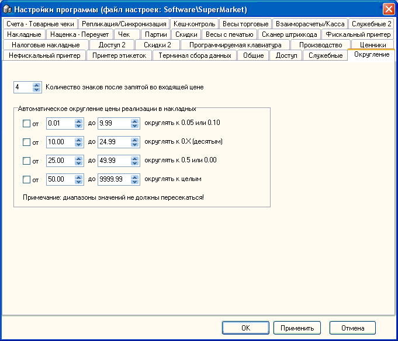

Количество знаков после запятой во входящей цене - разные поставщики могут с разной точностью указывать в своих накладных цену за товар, поэтому этот параметр часто является очень критичным. Рекомендуем всегда использовать максимальное значение: 4.
Автоматическое округление цены реализации в накладных - данный тарификатор посволяет с большой гибкостью выставить методику округления выходящей (реализационной) цены. Это позволяет избежать проблем с нехваткой мелочи на кассах и т.п. Можно использовать не все диапазоны, кроме этого их пределы можно редактировать, единственное требование - диапазоны значений не должны пересекаться.
